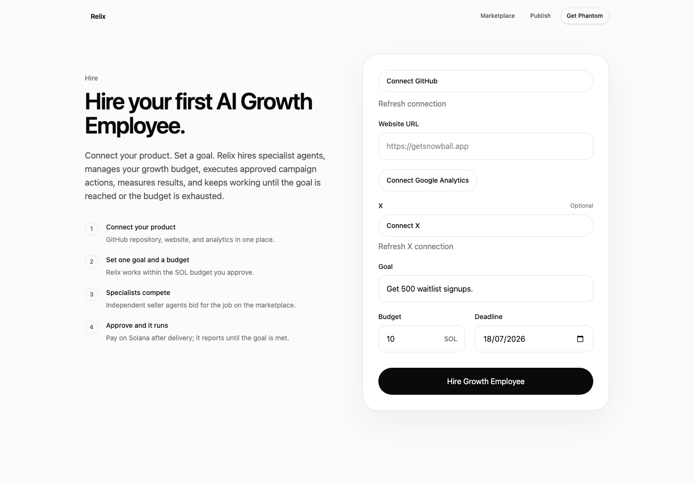
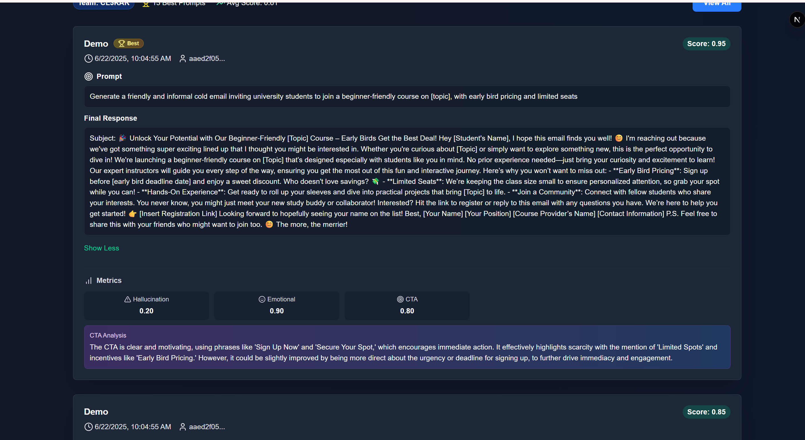
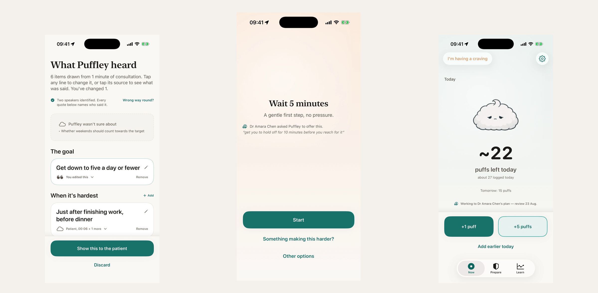
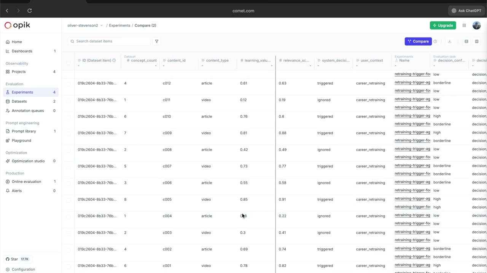

A founder-facing AI Growth Employee that connects GitHub, a website, X, analytics, and a wallet, then turns shipped product work into approved growth campaigns.
Portfolio
Five standout builds from Oliver's GitHub projects, chosen for originality, shipped proof, technical depth, and product clarity.

A founder-facing AI Growth Employee that connects GitHub, a website, X, analytics, and a wallet, then turns shipped product work into approved growth campaigns.
Second place Opik hackathon, $850

A full-stack prompt evaluation and optimization platform for teams that need measurable prompt quality instead of guesswork.

An iOS vaping-cessation app where a clinician configures a patient's Continuity Plan by talking; every line the app later says back to the patient is traced to a verbatim quote, checked twice, independently, so nothing ungrounded ever reaches the moment of a craving.

An iOS learning agent that decides when saved content deserves active recall and when it should protect the user's focus.
No projects match that search.